# Definition of VC Dimension
首先，我們知道如果一個假設空間 H 有 break point k，那麼它的成長函數是有界的，它的上界稱為 Bound function。根據數學歸納法，Bound function 也是有界的，且上界為。從下面的表格可以看出， 比 鬆弛很多。
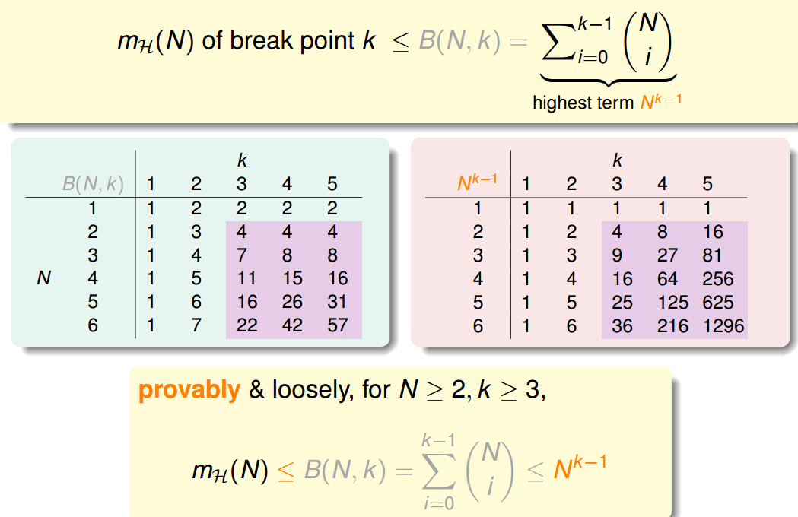
則根據上一節課的推導，VC bound 就可以轉換為：
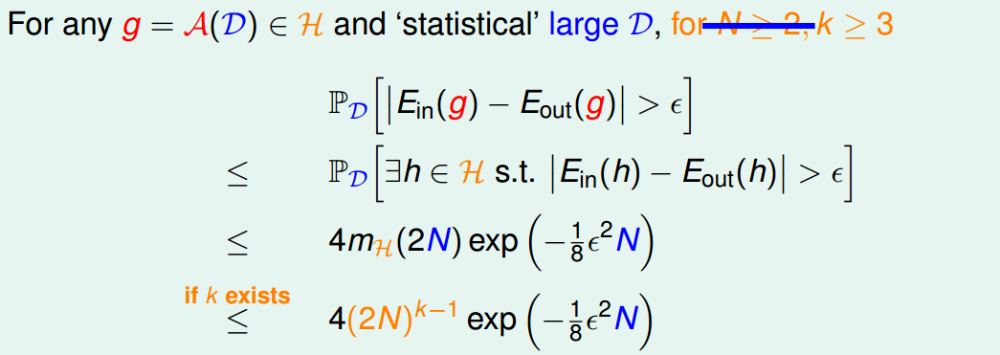
這樣，不等式只與 k 和 N 相關了，一般情況下樣本 N 足夠大，所以我們只考慮 k 值。有如下結論：
- 若假設空間 H 有 break point k，且 N 足夠大，則根據 VC bound 理論，演算法有良好的泛化能力
- 在假設空間中選擇一個 g，使 ，則其在全集資料中的錯誤率會較低
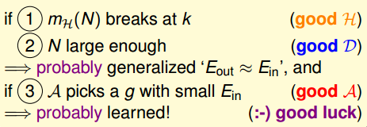
下面介紹一個新的名詞：VC Dimension。VC Dimension 就是某假設集 H 能夠 shatter 的最多 inputs 的個數，即最大完全正確的分類能力。（注意，只要存在一種分佈的 inputs 能夠正確分類也滿足）。
shatter 的英文意思是 粉碎，也就是說對於 inputs 的所有情況都能列舉出來。例如對 N 個輸入，如果能夠將 種情況都列出來，則稱該 N 個輸入能夠被假設集 H shatter。
根據之前 break point 的定義：假設集不能被 shatter 任何分佈類型的 inputs 的最少個數。則 VC Dimension 等於 break point 的個數減一。
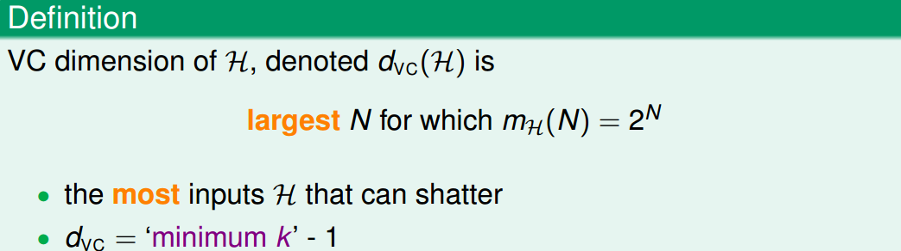
現在，我們回顧一下之前介紹的四種例子，它們對應的 VC Dimension 是多少：
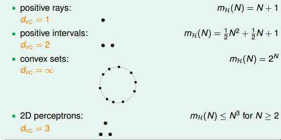
用 代替 k，那麼 VC bound 的問題也就轉換為與 和 N 相關了。同時，如果一個假設集 H 的 確定了，則就能滿足機器能夠學習的第一個條件，與演算法、樣本資料分佈和目標函數都沒有關係。
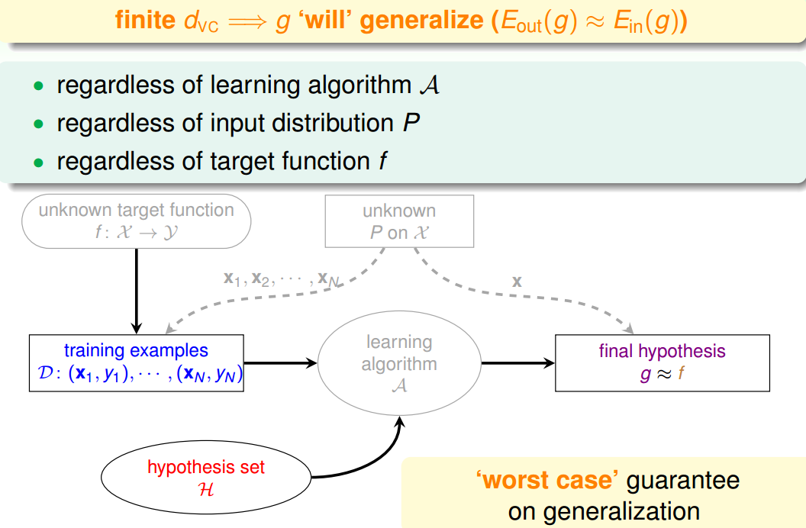
# VC Dimension of Perceptrons
回顧一下我們之前介紹的 2D 下的 PLA 演算法，已知 Perceptrons 的 k=4，即。根據 VC Bound 理論，當 N 足夠大的時候，。如果找到一個 g，使，那麼就能證明 PLA 是可以學習的。
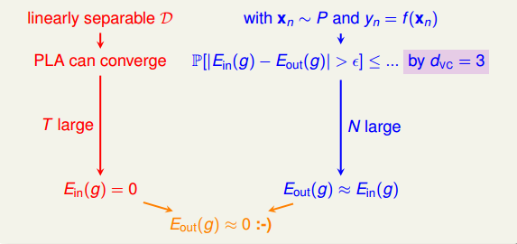
這是在 2D 情況下，那如果是多維的 Perceptron，它對應的 又等於多少呢？
已知在 1D Perceptron，，在 2D Perceptrons，，那麼我們有如下假設：，其中 d 為維數。
要證明的話，只需分兩步證明：
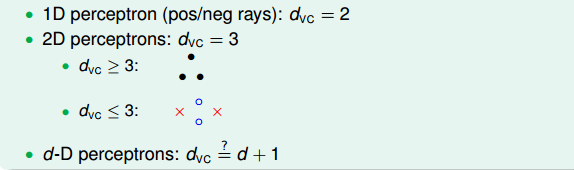
首先證明第一個不等式：。
在 d 維裡，我們只要找到某一類的 d+1 個 inputs 可以被 shatter 的話，那麼必然得到。所以，我們有意構造一個 d 維的矩陣 能夠被 shatter 就行。X 是 d 維的，有 d+1 個 inputs，每個 inputs 加上第零個維度的常數項 1，得到 的矩陣：
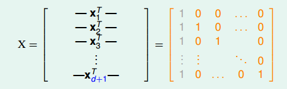
矩陣中，每一行代表一個 inputs，每個 inputs 是 d+1 維的，共有 d+1 個 inputs。這裡構造的 X 很明顯是可逆的。shatter 的本質是假設空間 H 對 X 的所有情況的判斷都是對的，即總能找到權重 W，滿足，。由於這裡我們構造的矩陣 X 的逆矩陣存在，那麼 d 維的所有 inputs 都能被 shatter，也就證明了第一個不等式。
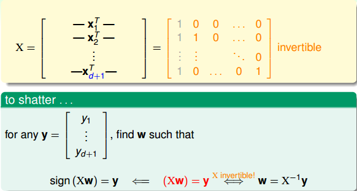
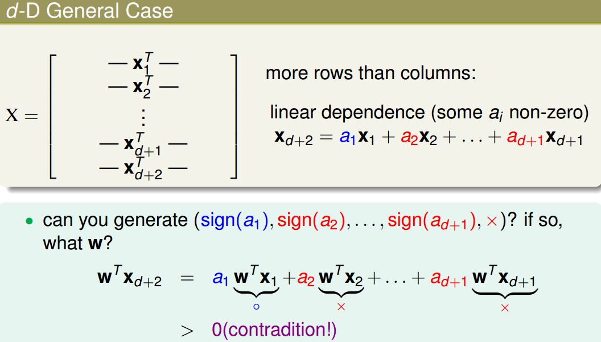
綜上證明可得。
# Physical Intuition VC Dimension
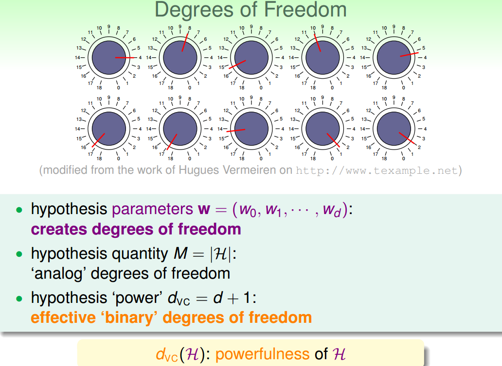
上節公式中 又稱 features，即自由度。自由度是可以任意調節的，如同上圖中的旋鈕一樣，可以調節。VC Dimension 代表了假設空間的分類能力，即反映了 H 的自由度，產生 dichotomy 的數量，也就等於 features 的個數，但也不是絕對的。
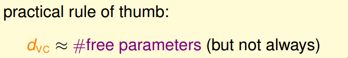
例如，對 2D Perceptrons，線性分類，，則，也就是說只要 3 個 features 就可以進行學習，自由度為 3。
介紹到這，我們發現 M 與 是成正比的，從而得到如下結論：
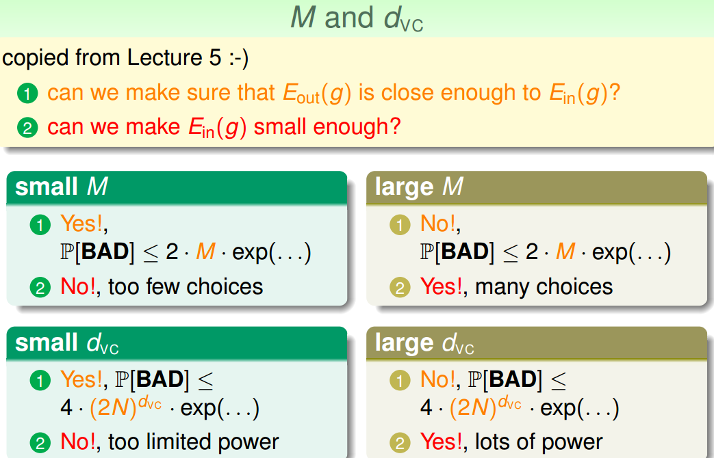
# Interpreting VC Dimension
下面，我們將更深入地探討 VC Dimension 的意義。首先，把 VC Bound 重新寫到這裡：
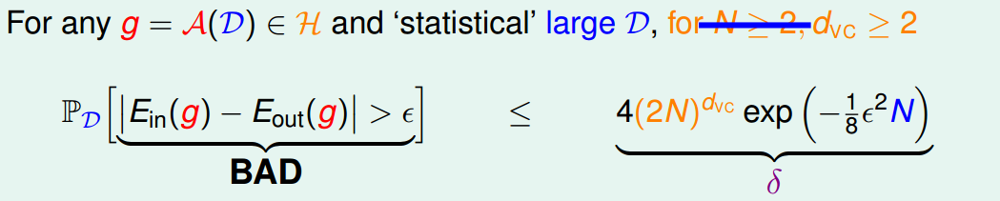
根據之前的泛化不等式，如果，即出現 bad 壞的情況的概率最大不超過。那麼反過來，對於 good 好的情況發生的概率最小為 則對上述不等式進行重新推導：
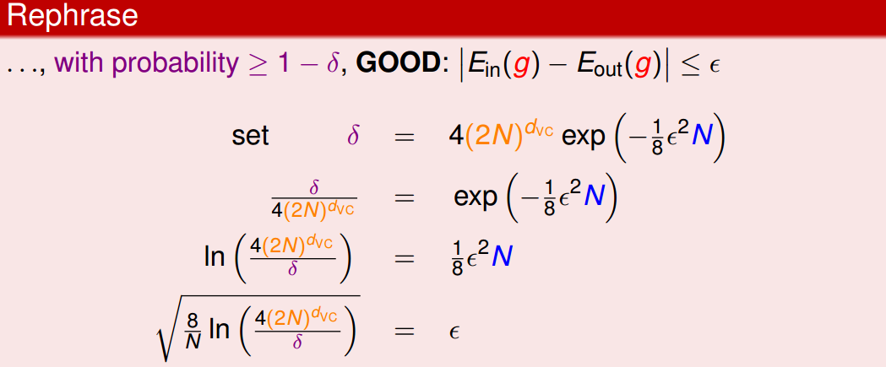
表現了假設空間 H 的泛化能力， 越小，泛化能力越大。
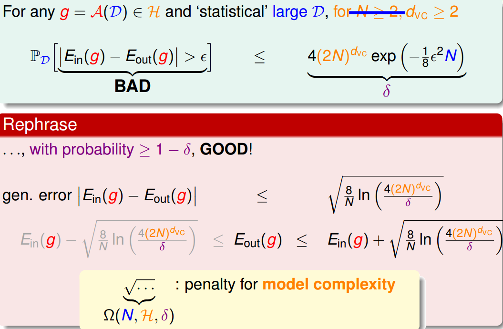
至此，已經推導出泛化誤差 的邊界，因為我們更關心其上界（ 可能的最大值），即：
上述不等式的右邊第二項稱為模型複雜度，其模型複雜度與樣本數量 N、假設空間、 有關。 由 共同決定。下面繪出、model complexity、 隨 變化的關係：
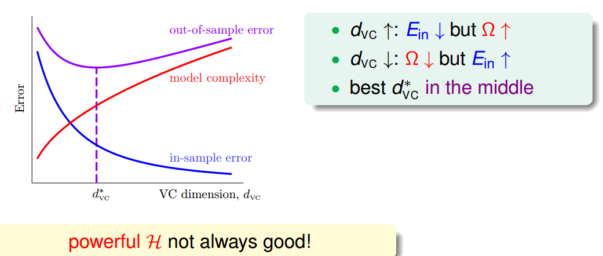
通過該圖可以得出如下結論：
- 越大， 越小， 越大（複雜）。
- 越小， 越大， 越小（簡單）。
- 隨著 增大， 會先減小再增大。
所以，為了得到最小的，不能一味地增大 以減小，因為 太小的時候，模型複雜度會增加，造成 變大。也就是說，選擇合適的，選擇的 features 個數要合適。
下面介紹一個概念：樣本複雜度（Sample Complexity）。如果選定，樣本資料 D 選擇多少合適呢？通過下面一個例子可以幫助我們理解：
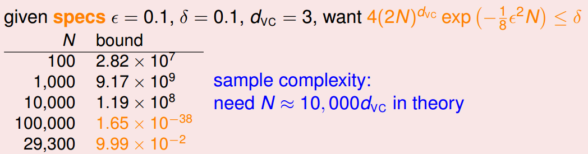
通過計算得到 N=29300，剛好滿足 的條件。N 大約是 的 10000 倍。這個數值太大了，實際中往往不需要這麼多的樣本數量，大概只需要 的 10 倍就夠了。N 的理論值之所以這麼大是因為 VC Bound 過於寬鬆了，我們得到的是一個比實際大得多的上界。
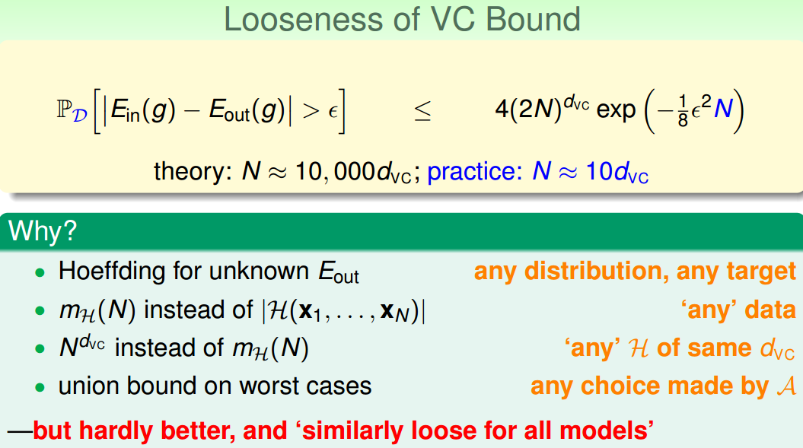
值得一提的是，VC Bound 是比較寬鬆的，而如何收緊它卻不是那麼容易，這也是機器學習的一大難題。但是，令人欣慰的一點是，VC Bound 基本上對所有模型的寬鬆程度是基本一致的，所以，不同模型之間還是可以橫向比較。因此，VC Bound 寬鬆對機器學習的可行性還是沒有太大影響。
# Conclusion
本節課主要介紹了 VC Dimension 的概念就是最大的 non-break point。然後，我們得到了 Perceptrons 在 d 維度下的 VC Dimension 是 d+1。接著，我們在物理意義上，將 與自由度聯繫起來。最終得出結論 不能過大也不能過小。選取合適的值，才能讓 足夠小，使假設空間 H 具有良好的泛化能力。